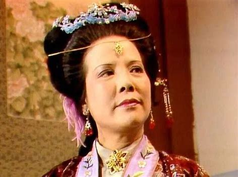

-

- 
-

邢夫人，贾赦续弦妻子。虽为贾府大太太，却因地位尴尬而比不上妯娌王夫人。
她禀性愚犟，只知奉承贾赦，家中大小事务，俱由丈夫摆布；出入银钱，一经她手，便克扣异常，婪取财货；儿女奴仆，一人不靠，一言不听，故甚不得人心。
作为贾家的大儿媳，她没能得到婆婆贾母的欢心和当家的权力，对儿媳妇王熙凤又一味奉承，贾母与王夫人极为不满。她一直伺机反扑，不时给她们制造难堪，如在她发现傻大姐拾得的五彩绣春囊时，便马上派王善保家的交给王夫人，把王夫人“气了个半死”，引发了抄检大观园。